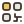

Foundations
Brand assets, semantic color tokens, typography, layout and spacing.
BrandingColor tokensTypographyLayout & spacingImplementation reference for the UX and Engineering team. Use this documentation to select components, inspect states, apply tokens and review interaction requirements.
Brand assets, semantic color tokens, typography, layout and spacing.
BrandingColor tokensTypographyLayout & spacingStandalone components with states, behavior rules and implementation references.
NavigationButtons & countsForms & searchLists & statusDomain components documented independently of application screens.
Scanner & verificationArrival & journeyLocation componentsMessages & summariesCSS, responsive rules, source files and Figma coverage.
Responsive CSSInteraction patternsComponent coverageDownloadskiddash.css; do not recreate component-specific colors or spacing.| Included | Excluded |
|---|---|
| Reusable components, state specimens and component interactions | Full-screen mockups and end-to-end application prototypes |
| Layout diagrams, CSS and responsive specifications | Camera, location, messaging and school-record integrations |
| Fictional identity and message content | Real student or guardian records |
Official logo asset, clear-space rules, minimum size, color treatment and product-copy requirements.
Reserve clear space of at least one quarter of the rendered logo height on all sides. At 160 px wide, the logo is about 50 px high; use 16 px of clear space.
Minimum full-logo width: 128 px. This is the proposed product minimum; check readability at the final device scale.
White monochrome treatment is reserved for dark backgrounds. The downloadable source remains unchanged.
Source palette, semantic assignments and text-contrast requirements. Select a swatch to copy its hexadecimal value.
| Role | Token | Rule |
|---|---|---|
| Main scan action | Honey | Raised yellow surface with an ink label. |
| Needs attention | Blush | Coral count surface; always include a count and label. |
| Remaining | Mist | Children still in school’s care, including those needing attention. |
| Picked up | Neutral 100 | Recorded handoffs, not scanned codes. |
| Deliberate decision | Clay | 20 px bold ink labels; avoid small ink text on clay. |
Nunito Sans type scale with actual-size specimens, line heights and font weights. Use the preview field to inspect a custom string.
402 × 874 px reference layout, four-column grid and spacing tokens. All padding and gaps use the 4 px scale.
Layout diagram: structural regions and spacing measurements, not an application mockup.
env(safe-area-inset-*) on the web.Use 4–8 px for closely related content, 12–16 px inside components, and 24–32 px between sections. Fractional grid widths are allowed; padding tokens remain multiples of four.
Action hierarchy, dimensions, interaction states and count selectors. Use shared component classes rather than screen-specific styles.
120 ms feedback. Shadow becomes inset; content shifts down 4 px.
Check the guardian before confirming. Disabled controls keep readable labels and have no elevation.
The demo completes after one second. Production waits for a verified result and blocks duplicates.
Attention selected. The active surface is inset.
Keep 48 px numbers and 12 px labels. No decorative arrows. Attention is part of Remaining, so 12 + 8 = 20, not 22.
Labeled input, search, selection and validation components. Field errors preserve entered values and identify the required correction.
Try “Justin”, “Sofia” or “Noah”.
aria-invalid and aria-describedby; an error never relies on red alone.Modal surfaces for focused decisions and contextual options. Includes focus management, dismissal behavior and action ordering.
Explain the consequence before ending a pickup trip.
Keep options close to the current pickup, with a clear way back.
| Part | Specification | Behavior |
|---|---|---|
| Surface | 354 px max / 24 px padding / 24 px radius | Scroll inside the dialog on short screens. |
| Backdrop | Ink at 32% opacity | Underlying controls are not interactive. |
| Heading / copy | 24 / 32 bold; 16 / 24 regular | Describe the outcome in plain language. |
| Actions | 56 px high, 12 px gap | Safe choice first in focus order; explicit action labels. |
| Focus | Native dialog / accessible heading | Focus enters the dialog, stays inside and returns to the trigger. |
Escape and the safe action dismiss without changing data. Never confirm a handoff by clicking the backdrop.
Attention messages, roster rows, status chips and documentation tables. Use full-width rows when names or messages require wrapping.
40 px portrait / 16 px padding / 16 px body. Reply is a cue inside the one button, not a nested button.
The current mobile application uses roster and history lists, so an in-app data table is not applicable. Do not squeeze a desktop table into a phone. This documentation uses accessible tables for specifications; the reusable CSS is included below.
| Student | Guardian | Handoff |
|---|---|---|
| Ben L. | David L. | 3:10 PM |
| Ella T. | Sam T. | 3:12 PM |
Rounded SVG icon set: 24 px grid, 1.75 px stroke, rounded joins and semantic color accents. Each asset can be downloaded individually.
Assets are displayed at 24 px. Select an icon to download the SVG.
Mapping of 71 Figma library items to web components. Coverage status distinguishes implemented specimens, adaptations, missing assets and retired designs.
Scanner surfaces, pickup passes, guardian pairs and explicit handoff controls. These are isolated component specimens; they do not update a roster.
Preview the component state without opening a camera.
.kd-scanner, .kd-scan-windowready | captured | invalidDefault state

Justin H. · David HanAuthorized guardian
Illustrative passThe host application enables this action only after identity verification. The action records the physical handoff, not the scan result.
Disabled and enabled states. Production code must prevent duplicate submissions.
Approaching notifications, arrival-sharing status, journey scenes and action rows. State controls below change one component at a time.
Search results, empty states and campus selection surfaces. Keep the query field in Forms & search; compose these components in the application.
Primary text: student name. Supporting text: class and location. Use a full-width control with a minimum 48 px target.
Check the spelling or use a different name.
The campus surface is a simplified web adaptation, not the original Figma illustration.
Requirements for navigation, progressive disclosure, selection, feedback and confirmation. Each pattern links to the relevant component documentation.
Approaching → Arrived → Identity checked → Handoff confirmed. These states are distinct. Messages, scans and swipe feedback never silently record a child as picked up.
View verification componentsIncoming and outgoing messages, contextual replies and source-linked summaries. Summary content does not change pickup authorization.
Example summary of fictional messages. Verify the source when a decision affects handoff.
Breakpoint definitions, layout grids, safe-area insets, reduced-motion rules and forced-color support. The width control visualizes the documented grid.
The preview simulates a viewport width inside this page; scroll horizontally to inspect larger canvases. The downloaded CSS uses real media queries. Tablet and desktop rules are a documented web adaptation.
| Range | Columns | Margin / gap |
|---|---|---|
| Under 768 px | 4 | 24 / 12 px (16 / 8 below 360 px) |
| 768–1199 px | 8 | 32 / 16 px |
| 1200 px and above | 12 | 32 minimum / 24 px; content capped at 1280 px |
Download implementation styles, source files, the offline guide and the one-page summary.
Tokens, typography, layout, controls and interaction patterns.
Specimen layouts, visualization styles and the guide navigation shell.
Phone, tablet and desktop rules; reduced motion and forced colors.
The supplied artwork, unchanged.
A print-ready overview and copyable text for the assignment.
Save one HTML file. Double-click to open on any desktop browser; no install or server needed.
HTML, CSS, JavaScript, fonts and shared icon assets.